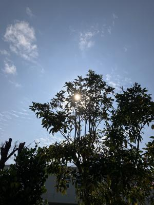
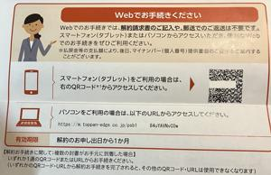
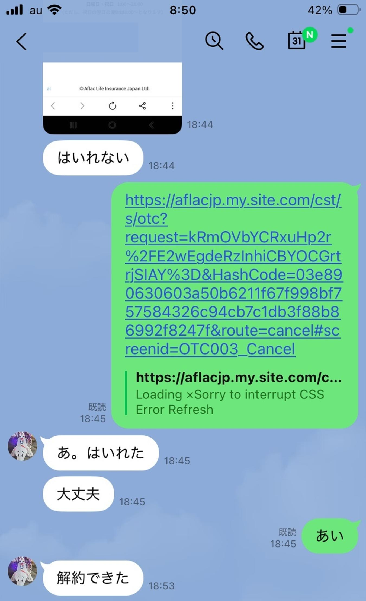
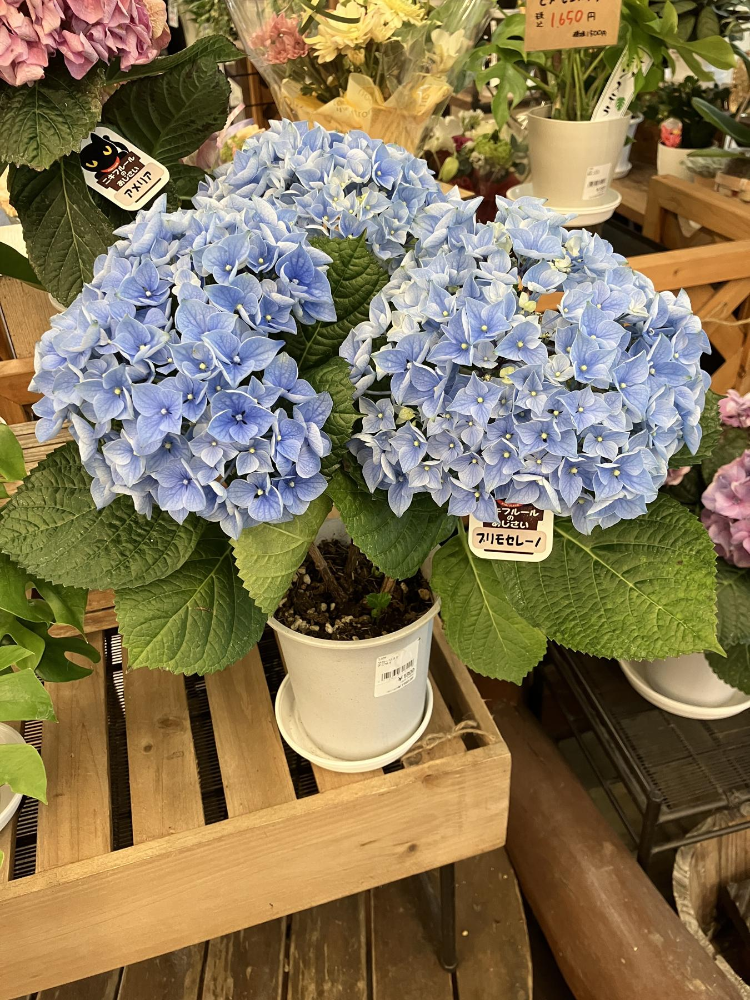

うるがいの話 ある日
最新: 保険の解約【うるがいの話 ある日】とは 一日だけのプログです
『うるがいの話』の最新一日だけのプログで、通信料が少なく経済的だ。カニの画像をクリックすると全ての日付が載る『うるがいの話』サイトを表示します
|
|
【うるがいの話】 うるがい(ｳﾙｶﾞｲ urugai)とは、『もずくがに』の名前でとても大きくなります。 |
|---|---|
|
|
【カミマヤーの話】 猫のことを方言でマヤーといいます。カミマヤー（kamimayaa）とは、神の猫のことです。 |
|
【たながぁの音楽】 たながぁ（ﾀﾅｶﾞｰ tanagaa）とは手長えびのことで、何種類かあり大きいのは車 エビぐらいになります。 |

|
【ぶながぁの話】 ぶながぁ(ﾌﾞﾅｶﾞｰ bunagaa)とは、赤い髪の毛、赤い身体、そして身長は１ｍ２０ｃｍ ぐらい、川の蟹を食べているの目撃された。場所は沖縄県国頭郡大宜味村のと ある村僕の隣近所に住んでいる爺さんから、聞いた話です。 |
|
|
【ギーマの話】 ギーマ(giima)とは、山原の里山に咲くスズランに似た、 花を付けます。実は食べられます、 気が付くと口の周りが紫になっています。 |
2026年04月23日 (木）保険の解約
17:07


『アドレスに入れない、お父さん入ってみて』、あい、入れない
見るとアドレスの文字が、一文字違う。修正したが、やはりアド
レスエラーとなる。ＱＲコードを読み込む、サイトに入れたがパ
ソコン向けのアドレスと違う。エーと、どうすればアドレスを伝
えることが出来るのだろうか、アドレスを長押しして、お！、コ
ピーして、ラインに貼り付ける。『解約できた』と台湾にいる子
供から、連絡があった。凄いですね、国を超えてリアルでやり取
りが出来るとは、私はパソコンとスマホの両方をラインを使って
ました。もともとは、子供の代わりにヨメが代筆する予定だった
のだが、紙はなくなっていた。

子供は、以前の仕事の付き合いでアフレックの保険に入っていた
が、解約することになった（払い戻し０円）。また、年金も停止
した。台湾に１０年もいる職場の日本人からアドバイスを、もら
っているとのこと。
これを契機に、私も長年契約していた、子供保険を解約使用と思
